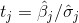

15.7 回归系数的标准误差
我们可以采用同样的方法来估计回归系数的标准误差。我们可以对数据重复采用 bootstrap_sample 样本，并根据这些样本估算 beta 。如果某个自变量（如 num_friends ）的系数在各个样本上变化不大，那么就可以确信我们的估计是比较严密的。如果这个系数随着样本的不同而起伏较大，那么我们就不能完全相信我们的估计。
唯一需要说明的是，采样前，我们需要把数据 X 和数据 Y 放到一起（用 zip ），以确保对自变量和因变量一起进行采样。这就意味着 bootstrap_sample 将返回一个由 (x_i, y_i) 数据对组成的列表，因此我们需要将其重新组合成一个 x_sample 和一个 y_sample ：
def estimate_sample_beta(sample):
"""sample is a list of pairs (x_i, y_i)"""
x_sample, y_sample = zip(*sample) # 魔法般的解压方式
return estimate_beta(x_sample, y_sample)
random.seed(0) # 所以你得到的结果与我的一样
bootstrap_betas = bootstrap_statistic(zip(x, daily_minutes_good),
estimate_sample_beta,
100)
之后，我们就可以估算每个系数的标准偏差了：
bootstrap_standard_errors = [
standard_deviation([beta[i] for beta in bootstrap_betas])
for i in range(4)]
# [1.174, # 常数项， 实际误差 = 1.19
# 0.079, # num_friends， 实际误差 = 0.080
# 0.131, # unemployed, 实际误差 = 0.127
# 0.990] # phd, 实际误差 = 0.998
我们可以使用它们来检验诸如“βi 等于 0 吗？”之类的假设。在满足 βi =0（以及与 εi 分布 有关的其他假设）的条件下，则有：

也就是说，这个统计量等于我们估算的 βj 除以估算的其标准误差，它符合具有“n -k 个自由度”的学生的 t 分布 （Student's t-distribution）。
如果我们有一个 students_t_cdf 函数，那么就可以计算每个最小二乘系数的 p 值，从而指出实际的系数为 0 时观察到这个值的可能性有多大。令人遗憾的是，实际上我们没有这样的函数。（虽然我们不想从头做起。）
然而，随着自由度变大，t 分布越接近标准正态分布。在这种情况下，即 n 比 k 大得多的情况下，我们便可以使用 normal_cdf 了，并且我们觉得它效果还不错：
def p_value(beta_hat_j, sigma_hat_j):
if beta_hat_j > 0:
# 如果系数是正的，则我们需要对
# 看见一个更大的值的概率做两次计算
return 2 * (1 - normal_cdf(beta_hat_j / sigma_hat_j))
else:
# 否则看见一个更小值的概率乘以2
return 2 * normal_cdf(beta_hat_j / sigma_hat_j)
p_value(30.63, 1.174) # ~0 (常数项)
p_value(0.972, 0.079) # ~0 (num_friends)
p_value(-1.868, 0.131) # ~0 (work_hours)
p_value(0.911, 0.990) # 0.36 (phd)
（在其他情况下，我们很可能会使用一个知道如何计算 t 分布和精确的标准误差的统计软件。）
虽然大多数系数的 p 值都非常小（但非 0 值），但是“博士学位”的系数与零没有“显著”区别，也就是说“博士学位”的系数很可能是随机的，无意义的。
在对回归分析要求更加精细的情形下，你可能需要对数据的各种假设进行更加细致的测试，比如“至少有一个 βj 是非 0 值”，或者“β 1 等于 β 2 且 β 3 等于 β 4 ”等，以便进行 F 测试，但是这些内容已经超出了本书的讨论范围。